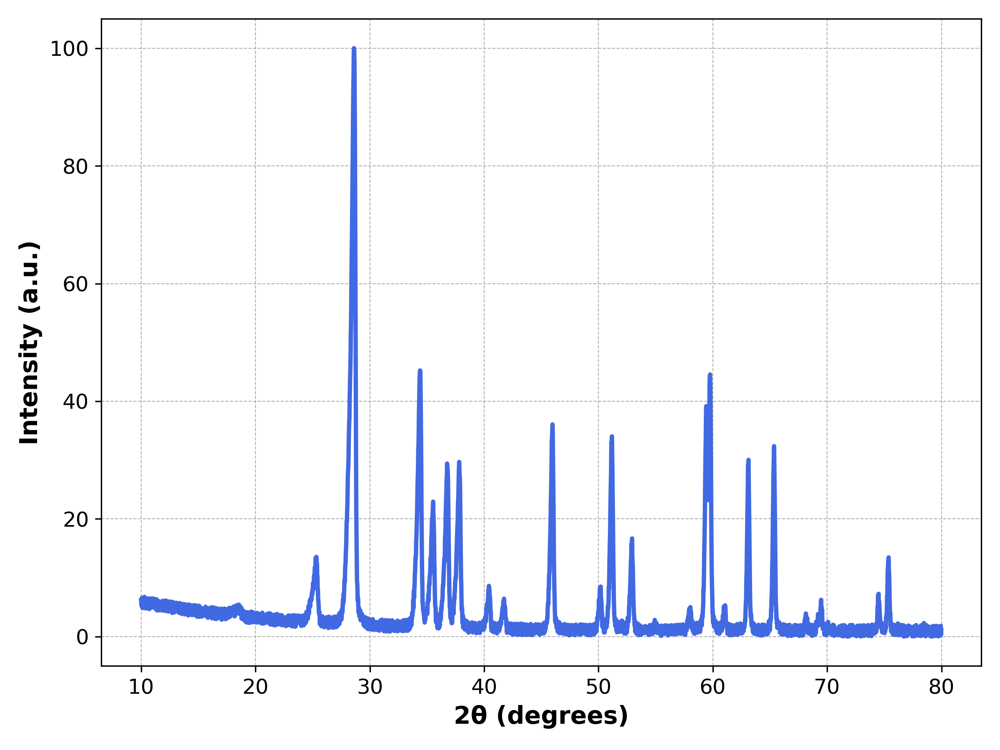
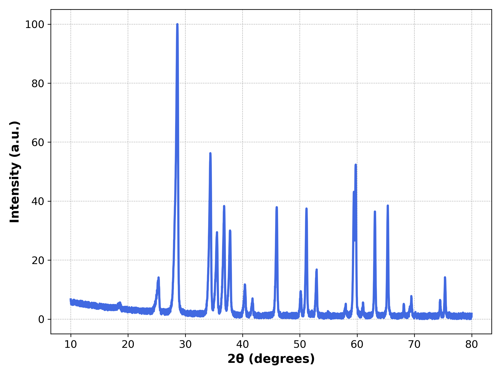
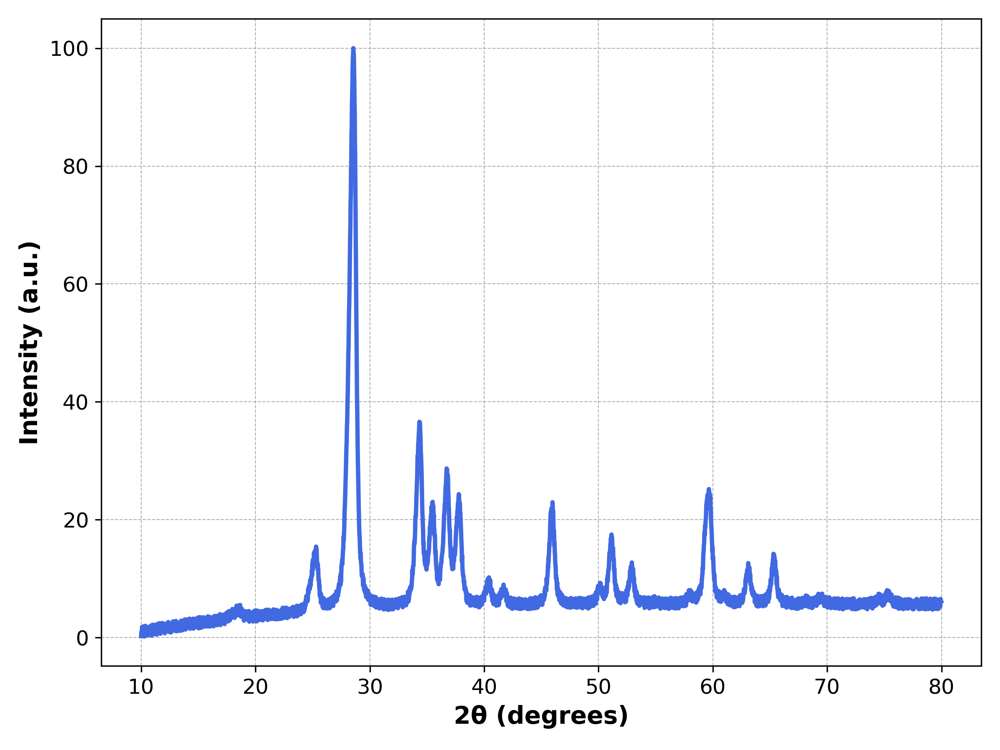

1. What Pysimxrd Does
Pysimxrd generates physically varied powder X-ray diffraction patterns from crystal structures stored in an ASE database. The examples in sim/ show three common workflows:
generator.parser(database, entry_id) to obtain a normalized 2-theta intensity profile.sim/ht_simxrd.py to generate many simulated patterns and save them into a new ASE database.The package has two simulation paths. The default path uses pymatgen for peak positions and the shared broadening/noise model. The optional sim_model="WPEM" path uses in-repository diffraction-condition, extinction, multiplicity, and structure-factor logic.
2. Installation
Create a clean Python environment. The simulation tutorial in sim/tutorial_sim.ipynb recommends Python newer than 3.9.
conda create -n pysimxrd python=3.10
conda activate pysimxrdInstall from PyPI after release:
pip install PysimxrdInstall from this repository during development:
cd SimXRD/src
pip install -e .Optional packages for the examples:
pip install matplotlib tqdmPYTHONPATH=src from the project root, or run them from an environment where Pysimxrd is installed.3. Start from Data
Pysimxrd expects crystal structures in an ASE database. The repository includes a small example database at sim/demo_mp.db.
3.1 Inspect the demo database
from ase.db import connect
database = connect("sim/demo_mp.db")
print("number of structures:", database.count())
row = database.get(id=1)
atoms = row.toatoms()
print("formula:", atoms.get_chemical_formula())
print("cell parameters:", atoms.cell.cellpar())
print("symbols:", atoms.get_chemical_symbols()[:10])An ASE row stores an atomic structure. Pysimxrd reads this row, converts the structure when needed, and returns a simulated XRD profile.
3.2 Prepare your own database
If you already have ASE Atoms objects, write them into a database:
from ase.db import connect
db = connect("my_crystals.db")
db.write(atoms, name="sample_001")If your structures are in CIF files, load them with ASE and write them to a database:
from ase.io import read
from ase.db import connect
db = connect("my_crystals.db")
atoms = read("example.cif")
db.write(atoms, name="example")After that, use my_crystals.db in exactly the same way as sim/demo_mp.db.
4. Simulate One Pattern
The core entry point is Pysimxrd.generator.parser. It returns x and y arrays.
from ase.db import connect
from Pysimxrd import generator
database = connect("sim/demo_mp.db")
entry_id = 1
x, y = generator.parser(database, entry_id)
print(len(x), len(y))
print(x[:5])
print(y[:5])By default, x is 2-theta in degrees and y is normalized intensity.
Return d-spacing instead of 2-theta
x_d, intensity = generator.parser(
database,
entry_id,
xrd="real",
)5. Plot and Save Figures
The notebook sim/XRD.ipynb plots default settings, stronger preferred orientation, and stronger thermal vibration. The same code can be used in a Python script.
import matplotlib.pyplot as plt
from ase.db import connect
from Pysimxrd import generator
database = connect("sim/demo_mp.db")
x, y = generator.parser(database, entry_id=8)
plt.figure(figsize=(8, 6))
plt.plot(x, y, color="royalblue", linewidth=2.5)
plt.xlabel("2θ (degrees)", fontsize=14, weight="bold")
plt.ylabel("Intensity (a.u.)", fontsize=14, weight="bold")
plt.grid(True, which="both", linestyle="--", linewidth=0.5)
plt.tight_layout()
plt.savefig("xrd_pattern.png", dpi=300)
plt.show()
sim/XRD.ipynb.6. Parameter Guide
The high-throughput script sim/ht_simxrd.py documents the main simulation parameters. The most useful controls are:
| Parameter | Meaning | Typical use |
|---|---|---|
grainsize | Specimen grain size in Angstroms. | Smaller values broaden peaks. |
prefect_orientation | Preferred-orientation variation range. The name is kept for compatibility. | Increase to vary relative peak intensities. |
thermo_vibration | Thermal vibration amplitude in Angstroms. | Higher values reduce and broaden peak features. |
zero_shift | 2-theta angular offset in degrees. | Simulate instrument zero error. |
background_order | Polynomial background order. | Usually 4 or 6. |
background_ratio | Background strength relative to peak intensity. | Increase for noisier baseline. |
mixture_noise_ratio | Uniform mixed-noise ratio. | Increase for random intensity noise. |
deformation | Whether to randomly deform lattice constants. | Use for data augmentation. |
lattice_extinction_ratio | Stretching/compression ratio for deformation. | Controls random length perturbation. |
lattice_torsion_ratio | Shear ratio for deformation. | Controls random angular/shear perturbation. |
Examples from sim/XRD.ipynb
# More preferred-orientation variation
x, y = generator.parser(database, entry_id=8, prefect_orientation=[0.2, 0.2])
# Stronger thermal vibration and smaller grain size
x, y = generator.parser(database, entry_id=8, thermo_vibration=0.4, grainsize=5)

7. WPEM Mode
Use WPEM mode when you want the in-repository diffraction condition, systematic extinction, multiplicity, and structure-factor pipeline.
x, y = generator.parser(
database,
entry_id=1,
sim_model="WPEM",
)Use WPEM with deformation:
x, y = generator.parser(
database,
entry_id=1,
sim_model="WPEM",
deformation=True,
lattice_extinction_ratio=0.01,
lattice_torsion_ratio=0.01,
)8. High-throughput Simulation
The file sim/ht_simxrd.py shows how to simulate many patterns from one input database and save them to a new ASE database.
Run the example from the sim/ directory:
cd sim
python ht_simxrd.pyFor a long job, the notebook suggests:
nohup python ht_simxrd.py &The script reads demo_mp.db, writes train.db, and by default generates one simulated pattern per structure in the demo script.
Core batch pattern
from ase.db import connect
from Pysimxrd import generator
input_db = connect("my_crystals.db")
output_db = connect("my_simulated_xrd.db")
for row in input_db.select():
atoms = row.toatoms()
x, y = generator.parser(input_db, row.id, deformation=True)
output_db.write(
atoms=atoms,
latt_dis=str(x),
intensity=str(y),
Label=row.id,
)The high-throughput script adds randomized parameters such as grain size, orientation, thermal vibration, and zero shift for each simulation.
9. Read Generated Data
The generated database stores the original atoms plus simulated arrays as string fields. Convert them back to arrays with ast.literal_eval or numpy.fromstring depending on the string format you wrote.
from ase.db import connect
import numpy as np
db = connect("sim/train.db")
row = db.get(id=1)
atoms = row.toatoms()
x = np.fromstring(row.latt_dis.strip("[]"), sep=" ")
y = np.fromstring(row.intensity.strip("[]"), sep=",")
print(atoms.get_chemical_formula())
print(x.shape, y.shape)If you save arrays with str(list(x)), use ast.literal_eval instead:
import ast
import numpy as np
x = np.array(ast.literal_eval(row.latt_dis))
y = np.array(ast.literal_eval(row.intensity))10. Troubleshooting
| Problem | Fix |
|---|---|
ModuleNotFoundError: Pysimxrd | Install the package with pip install -e src from the repository root, or run with PYTHONPATH=src. |
| Database path not found | Use paths relative to the current working directory. From the project root use sim/demo_mp.db; from inside sim/ use demo_mp.db. |
| Entry id error | Check database.count() and use ASE row ids, usually starting from 1. |
| Unexpected output axis | Use xrd="reciprocal" for 2-theta and xrd="real" for d-spacing. |
| Slow batch simulation | Use the process-pool pattern in sim/ht_simxrd.py and start with a small times value for testing. |